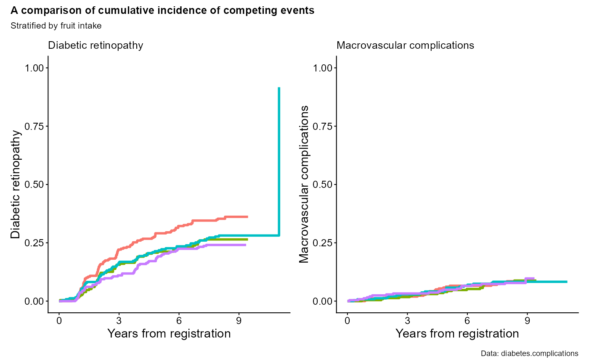
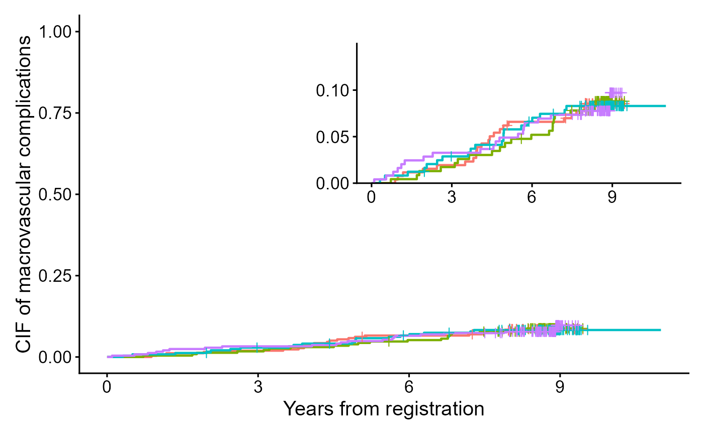

cifpanel() is the panel-building counterpart of cifplot().
It takes one or more model formulas (or, alternatively, one formula and several
event-coding specifications) and returns a multi-panel figure, typically as a
patchwork-compatible object. Most display options (axis labels, marks, style, ggsave options)
are shared with cifplot(), but per-panel legends and number-at-risk tables are
suppressed to avoid duplicated display. Typical use cases are:
Compare CIF (event 1) vs CIF (event 2) in a 1×2 layout.
Compare survival/CIF curves across strata with a shared legend and matched axes.
Display a plot with an enlarged y-axis inside a full-scale plot.
Usage
cifpanel(
plots = NULL,
formula = NULL,
formulas = NULL,
data = NULL,
weights = NULL,
subset.condition = NULL,
na.action = na.omit,
outcome.type = NULL,
code.events = NULL,
error = NULL,
conf.type = NULL,
conf.int = NULL,
type.y = NULL,
label.x = NULL,
label.y = NULL,
label.strata = NULL,
order.strata = NULL,
level.strata = NULL,
limits.x = NULL,
limits.y = NULL,
breaks.x = NULL,
breaks.y = NULL,
add.conf = NULL,
add.risktable = NULL,
add.estimate.table = NULL,
symbol.risk.table = NULL,
font.size.risk.table = NULL,
add.censor.mark = NULL,
shape.censor.mark = NULL,
size.censor.mark = NULL,
add.competing.risk.mark = NULL,
competing.risk.time = NULL,
shape.competing.risk.mark = NULL,
size.competing.risk.mark = NULL,
add.intercurrent.event.mark = NULL,
intercurrent.event.time = NULL,
shape.intercurrent.event.mark = NULL,
size.intercurrent.event.mark = NULL,
add.quantile = NULL,
level.quantile = NULL,
rows.columns.panel = c(1, 1),
inset.panel = FALSE,
title.panel = NULL,
subtitle.panel = NULL,
caption.panel = NULL,
tag.panel = NULL,
title.plot = NULL,
style = "classic",
palette = NULL,
linewidth = 0.8,
linetype = FALSE,
font.family = "sans",
font.size = 8,
legend.position = "top",
legend.collect = TRUE,
inset.left = 0.6,
inset.bottom = 0.05,
inset.right = 0.98,
inset.top = 0.45,
inset.align.to = c("panel", "plot", "full"),
inset.legend.position = NULL,
print.panel = FALSE,
filename.ggsave = NULL,
width.ggsave = NULL,
height.ggsave = NULL,
dpi.ggsave = 300,
survfit.info = NULL,
axis.info = NULL,
visual.info = NULL,
panel.info = NULL,
style.info = NULL,
inset.info = NULL,
print.info = NULL,
ggsave.info = NULL,
engine = "cifplot",
...
)Arguments
- plots
Optional list of existing ggplot objects to be arranged into a panel. When plots is supplied, no new models are fitted; the plots are used as-is.
- formula
A model formula specifying the time-to-event outcome on the left-hand side (typically
Event(time, status)orSurv(time, status)) and, optionally, a stratification variable on the right-hand side. Unlikecifplot(), this function does not accept a fittedsurvfitobject.- formulas
Optional list of formulas. When given, each formula defines one panel. This is the most common way to create “one variable per plot” panels.
- data
A data frame containing variables in the formula.
- weights
Optional name of the weight variable in
data. Weights must be nonnegative.- subset.condition
Optional character string giving a logical condition to subset
data(defaultNULL).- na.action
A function specifying the action to take on missing values (default
na.omit).- outcome.type
Character string specifying the type of time-to-event outcome. One of
"survival"(Kaplan-Meier) or"competing-risk"(Aalen-Johansen). IfNULL(default), the function automatically infers the outcome type from the data: if the event variable has more than two unique levels,"competing-risk"is assumed; otherwise,"survival"is used. You can also use abbreviations such as"S"or"C". Mixed or ambiguous inputs (e.g.,c("S", "C")) trigger automatic detection based on the event coding.- code.events
Optional numeric length-3 vector
c(event1, event2, censoring). When supplied, it overridescode.event1,code.event2, andcode.censoring(primarily used whencifpanel()is called or whenpanel.per.event = TRUE).- error
Character string specifying the method for SEs and CIs used internally. For
"survival"without weights, choose one of"greenwood"(default),"tsiatis", or"if". For"competing-risk"without weights, choose one of"delta"(default),"aalen", or"if". SEs and CIs based on influence functions ("if") is recommended for weighted analysis.- conf.type
Character specifying the method of transformation for CIs used internally (default
arcsine-square root).- conf.int
Numeric two-sided level of CIs (default
0.95).- type.y
Character string specifying the y-scale. For survival/CIF curves,
"surv"implies survival probabilities and"risk"implies CIF (1-survival in simple survival settings). Specify"cumhaz"to plot cumulative hazard or"cloglog"to generate a complementary log-log plot. IfNULL, a default is chosen fromoutcome.typeor the survfit object.- label.x
Character x-axis label (default
"Time").- label.y
Character y-axis label (default is chosen automatically from
outcome.typeandtype.y, e.g. "Survival", "Cumulative incidence" or "Cumulative hazard").- limits.x
Numeric length-2 vector specifying x-axis limits. If
NULL, it is set from the fitted object (typicallyc(0, max(time))).- limits.y
Numeric length-2 vector specifying y-axis limits. If
NULL, it is set toc(0, 1)for probability-type outcomes.- breaks.x
Numeric vector of x-axis breaks (default
NULL).- breaks.y
Numeric vector of y-axis breaks (default
NULL).- add.conf
Logical; if
TRUE, adds a CI ribbon (viaggsurvfit::add_confidence_interval()). DefaultTRUE.- add.censor.mark
Logical; if
TRUE, draws censoring marks on each curve (viaggsurvfit::add_censor_mark()). DefaultTRUE.- shape.censor.mark
Integer point shape used for censoring marks (default
3).- size.censor.mark
Numeric point size used for censoring marks (default
2).- add.competing.risk.mark
Logical; if
TRUE, draws time marks for the competing event (event 2). If no times are supplied viacompeting.risk.time, the function tries to extract them automatically from the data. DefaultFALSE.- competing.risk.time
A named list of numeric vectors. Each name must correspond to a strata label, and its numeric vector gives the times at which the competing event occurred in that stratum. Typically left as
list()and filled internally.- shape.competing.risk.mark
Integer point shape for competing-risk marks (default
16).- size.competing.risk.mark
Numeric point size for competing-risk marks (default
2).- add.intercurrent.event.mark
Logical; if
TRUE, overlays user-specified intercurrent-event times per stratum. DefaultFALSE.- intercurrent.event.time
A named list of numeric vectors for intercurrent events (names must match strata labels).
- shape.intercurrent.event.mark
Integer point shape for intercurrent-event marks (default
1).- size.intercurrent.event.mark
Numeric point size for intercurrent-event marks (default
2).- add.quantile
Logical; if
TRUE, adds a quantile reference line (viaggsurvfit::add_quantile()). DefaultFALSE.- level.quantile
Numeric quantile level to be shown (default
0.5for the median).- rows.columns.panel
Optional integer vector
c(nrow, ncol)controlling the layout of the panel returned by the panel modes. IfNULL, an automatic layout is determined from the number of subplots.- inset.panel
Logical. If
FALSE(default), all panels are arranged in a regular grid usingpatchwork::wrap_plots()andplot_layout(). IfTRUE, the function switches to “inset mode”: the first plot becomes the main plot and the second plot (only the second) is drawn on top of it as an inset. Additional plots beyond the second are ignored in inset mode. Use grid mode to display more than two panels (inset.panel = FALSE).- title.panel, subtitle.panel, caption.panel
Character annotations applied to the whole panel layout (not to individual plots). These are passed to
patchwork::plot_annotation()and are useful for creating figure-like outputs (title + subfigures + caption).- tag.panel
Passed to
patchwork::plot_annotation()to auto-label individual panels (e.g."A","B","C"). Typical values are"A","1", or"a". See?patchwork::plot_annotation.- title.plot
Character vector of titles for each panel in the order they are drawn. Length-1 values are recycled to all panels. In inset mode, the first element refers to the main plot and the second (if present) to the inset.
- style
Character choosing the base plot style:
"classic","bold","framed","grid","gray"or"ggsurvfit"(default"classic"). Abbreviations such as"C","B","F", or"G"are also accepted.- palette
Optional character vector specifying the color palette to use across strata.
- linewidth
Optional numeric specifying the line width of curve (default
0.8).- linetype
Optional logical using different line types of curve (default
FALSE).- font.family
Character specifying the font family:
"sans","serif", or"mono"(default"sans").- font.size
Integer specifying the base font size (default
12).- legend.collect
Logical; if
TRUE, try to collect a single legend for all panels (passed to patchwork). DefaultTRUE.- inset.left, inset.bottom, inset.right, inset.top
Numeric values in the range
[0, 1]that define the inset box as fractions of the reference area.inset.left/inset.rightcontrol the horizontal position,inset.bottom/inset.topcontrol the vertical position. Values are interpreted as “from the left/bottom” of the reference. For example,inset.left = 0.4,inset.right = 1.0draws the inset over the right 60% of the reference area.- inset.align.to
Character string specifying the coordinate system for the inset box. One of
"panel"(default; the box is placed relative to the panel area, i.e. the plotting region excluding outer titles/margins),"plot"(relative to the entire plot area, including axes and titles of the main plot), or"full"(relative to the full patchwork canvas). This argument is passed topatchwork::inset_element().- inset.legend.position
Optional legend position for the inset plot only. If
NULL(default), the inset plot keeps whatever legend position was defined for it (often this means a legend will also be inset). Set, for example,"none"to hide the legend inside the inset, while still showing the main plot's legend.- print.panel
Logical. When
TRUE, panel displays created internally are printed automatically in interactive sessions; otherwise they are returned invisibly for further modification (defaultFALSE).- filename.ggsave
Character; if non-
NULL, save the plot to this file.- width.ggsave
Numeric width passed to
ggplot2::ggsave()(default6).- height.ggsave
Numeric height passed to
ggplot2::ggsave()(default6).- dpi.ggsave
Numeric DPI passed to
ggplot2::ggsave()(default300).- survfit.info, axis.info, visual.info, panel.info, style.info, print.info, ggsave.info, inset.info
Internal lists used for programmatic control. Not intended for direct user input.
- ...
Additional arguments forwarded to the internal
cifplot_single()calls that build each panel. Use this to pass low-level options such ascompeting.risk.time,intercurrent.event.time, or styling overrides.
Value
A "cifpanel" object (returned invisibly), which is a list
with at least the following elements:
list.plot: a list of ggplot objects, one per panelpatchwork: a patchwork object representing the composed panelplot: reserved for backwards compatibility (alwaysNULL)metadata fields mirroring those in
cifplot()(such as information on the fitted curves and display settings)
When print.panel = TRUE, the patchwork object is printed in interactive
sessions in addition to being returned.
Details
Overview
cifpanel() composes multiple survival/CIF plots into a single figure.
For each panel, it estimates curves via cifcurve() and renders them with
cifplot(). You can supply a single formula reused across panels or a
list in formulas (one per panel). When both are provided, formulas wins.
Outcome type & event coding
Use
outcome.typeto set per-panel estimator ("survival"=KM,"competing-risk"=AJ).Alternatively, pass
code.eventsper panel to infer the type:length 2 = survival:
c(event1, censor)length 3 = competing-risk:
c(event1, event2, censor)
If
outcome.typeisNULL, the function infers each panel from itscode.events[[i]]length. When both are given,outcome.typetakes precedence.
Panel-wise vs shared arguments
Panel layout is specified by length-2 vector rows.columns.panel.
This function can also automatically determine the panel count in the following order:
(1) if plots is supplied, its length defines the number of plots,
(2) else if formulas is supplied, its length defines the number of plots,
(3) else if code.events is supplied, its length defines the number of plots
together with formula, and (4) otherwise rows.columns.panel=c(1,1).
Many arguments accept a scalar (recycled to all panels) or a list/vector (one entry per panel). Precedence: panel-wise explicit values > shared scalar > internal defaults. Length-1 inputs are recycled.
Grid vs inset composition
Grid mode (
inset.panel = FALSE, default): plots are arranged withpatchwork::wrap_plots()andplot_layout(). Iflegend.collect = TRUE, legends are collected across panels where possible.Inset mode (
inset.panel = TRUE): the second plot is overlaid into the first usingpatchwork::inset_element(). Only the first two plots are used; extra plots are ignored. Control the inset box withinset.left,inset.bottom,inset.right,inset.top, and its reference frame viainset.align.to("panel","plot", or"full").
Advanced panel controls (forwarded to cifplot())
The following arguments allow per-panel control by supplying vectors/lists,
or shared control by supplying scalars. They are forwarded to cifplot().
formulaorformulas: one formula or a list of formulas; each entry creates a panel.data,outcome.type,code.events,type.y: recycled across panels unless a list is supplied for per-panel control.rows.columns.panel: specification of grid layout by c(rows, cols).inset.panel: inset layout.title.panel,subtitle.panel,caption.panel,title.plot: overall titles and captions.tag.panel: panel tag style (e.g., "A", "a", "1").label.x,label.y,limits.x,limits.y,breaks.x,breaks.y: shared axis control unless a list is supplied for per-panel control.
Scale & labels
| Argument | Meaning | Default |
type.y | "risk" (CIF y-axis) or NULL (survival). | inferred |
label.x, label.y | Axis labels per panel. | auto |
label.strata | Legend labels per panel. | from data |
limits.x, limits.y | Axis limits c(min, max). | auto |
breaks.x, breaks.y | Axis breaks (forwarded to breaks.x/breaks.y). | auto |
Plot layers (toggles)
| Argument | Effect | Default |
add.conf | CI ribbon. | TRUE |
add.censor.mark | Censor marks. | TRUE |
add.competing.risk.mark | Marks for event2 at supplied times. | FALSE |
add.intercurrent.event.mark | User-specified intercurrent marks. | FALSE |
add.quantile | Quantile reference line(s). | FALSE |
(Time marks inputs such as competing.risk.time / intercurrent.event.time
can be given via ... if needed; names must match strata labels.)
Legend & annotations
legend.position:"top","right","bottom","left", or"none"(applies to all panels).Grid mode:
legend.collect = TRUEattempts a shared legend.Panel annotations:
title.panel,subtitle.panel,caption.panel.Tagging:
tag.panelis passed topatchwork::plot_annotation().In inset mode,
title.plot = c(title_base, title_inset)labels the two plots.
Export (optional)
If filename.ggsave is non-NULL, the composed panel is saved with
ggsave() using width.ggsave, height.ggsave, and dpi.ggsave.
Otherwise, the function returns objects without saving.
Notes
Mixed panel types are supported (e.g., AJ in panel 1; KM in panel 2).
If
formulasis shorter than the grid capacity, empty slots are ignored.When supplying vectors/lists per panel, their lengths must match the number of panels; length-1 inputs are recycled; otherwise an error is thrown.
For CIF displays, set
type.y = "risk". For survival scale, usetype.y = NULLor= "surv". For ADaM-style data, usecode.events=c(0,1)orcode.event1 = 0,code.censoring = 1.Additional graphical options (e.g., theme) can be added post-hoc to each element of
list.plotor to the composedpatchwork.
![[Experimental]](figures/lifecycle-experimental.svg)
See also
polyreg() for log-odds product modeling of CIFs; cifcurve() for KM/AJ estimators; cifplot() for display of a CIF; ggsurvfit::ggsurvfit, patchwork::patchwork and modelsummary::modelsummary for display helpers.
Examples
data(diabetes.complications)
output1 <- cifpanel(
title.panel = "A comparison of cumulative incidence of competing events",
rows.columns.panel = c(1,2),
formula = Event(t, epsilon) ~ fruitq,
data = diabetes.complications,
outcome.type = "competing-risk",
code.events = list(c(1,2,0), c(2,1,0)),
label.y = c("Diabetic retinopathy", "Macrovascular complications"),
label.x = "Years from registration",
subtitle.panel = "Stratified by fruit intake",
caption.panel = "Data: diabetes.complications",
title.plot = c("Diabetic retinopathy", "Macrovascular complications"),
legend.position = "bottom",
legend.collect=TRUE
)
print(output1)

output2 <- cifplot(Event(t,epsilon) ~ fruitq,
data = diabetes.complications,
outcome.type="competing-risk",
code.event1=2,
code.event2=1,
add.conf = FALSE,
add.risktable = FALSE,
label.y="CIF of macrovascular complications",
label.x="Years from registration")
output3 <- cifplot(Event(t,epsilon) ~ fruitq,
data = diabetes.complications,
outcome.type="competing-risk",
code.event1=2,
code.event2=1,
add.conf = FALSE,
add.risktable = FALSE,
label.y="",
label.x="",
limits.y=c(0,0.15))
#> Warning: Some point estimates fall outside `limits.y` = [0, 0.15].
output4 <- list(a = output2$plot, b = output3$plot)
output5 <- cifpanel(plots = output4,
inset.panel = TRUE,
inset.left = 0.40, inset.bottom = 0.45,
inset.right = 1.00, inset.top = 0.95,
inset.align.to = "plot",
inset.legend.position = "none",
legend.position = "bottom")
print(output5)
